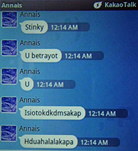
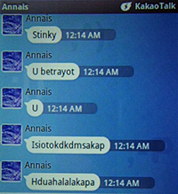

This is a Totoro doll that my friend Vo gave from his trip to Japan.
So I decided to use the doll and make a fun gif.

This was Vo's reaction on Facebook.

I went to Hirshorn Museum at Washington D.C. with a friend called Leslie. My parents were worried that I might not make it alive during the trip. So, I sent them a gif showing that I was ok.

This is my mom's reaction typed in Korean on Skype chat. This is the exact translation: "Hahahah This is so fun and pretty. Thank you Jia. You made me smile wide as soon as I woke up this morning."
These were a series of pictures that my friend Angel took last winter, of my friend Zoe and me going down the steps of our dorms, on our way to dinner. I felt nostalgic while looking through the picture albums on Facebook. Due to our busy Fall semester and living in different homes this year, we couldn't hang out as much as we did before. This gif brought fun memories back. Obviously, I gave this gif to Zoe.

This is Zoe's reaction on Facebook.
As I went to the Hirshorn Museum with my friend Leslie, as I have mentioned before, I decided to make this gif for her. She helped me take photographs of art pieces that I was interested in. As a small thank you gift, I made a gif that goes along with the beat to a K-Pop song called 'Mi-Chi-Go' by G-Dragon. (Michigo is Korean and means crazy in English.)

This is Leslie's reaction on Facebook.

This was a perfect small gift for my little sister, Annais. I love teasing her from across the seas. She's in South Korea, studying her high school away so that she could attend college in America, like me. I miss her so much.
 
 These three images are my sister's reactions on Kakao Talk chat.
(Kakao Talk is a Korean Smartphone App that allows people who have an account chat for free.)
Translation for Korean part: "What? Why? hahahah Hey lol You die!!! That looks delicious."